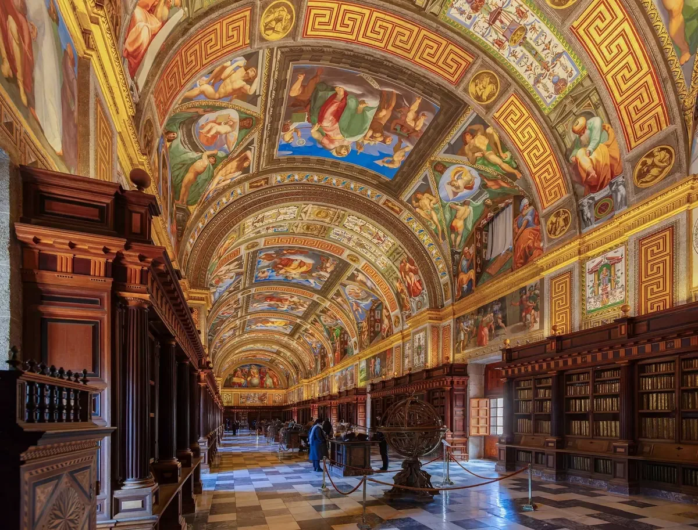
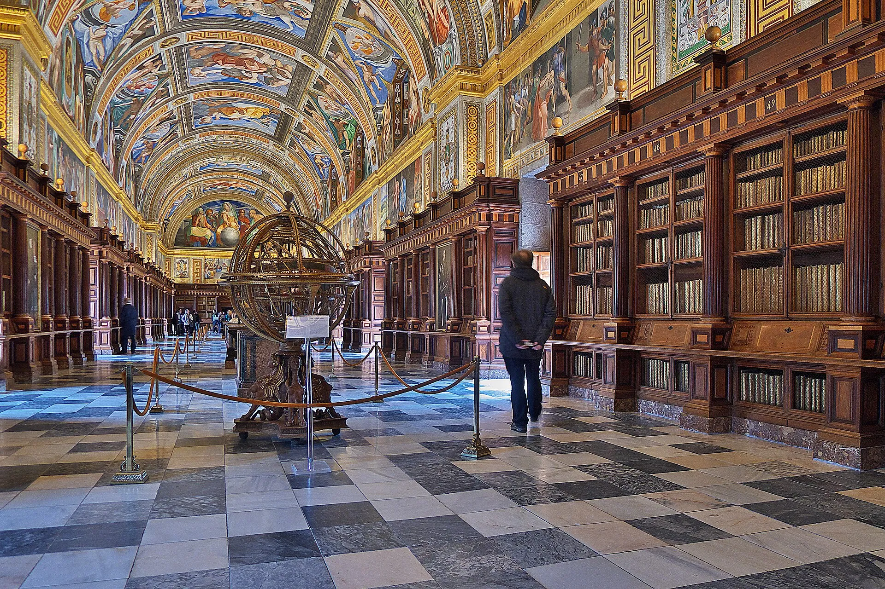
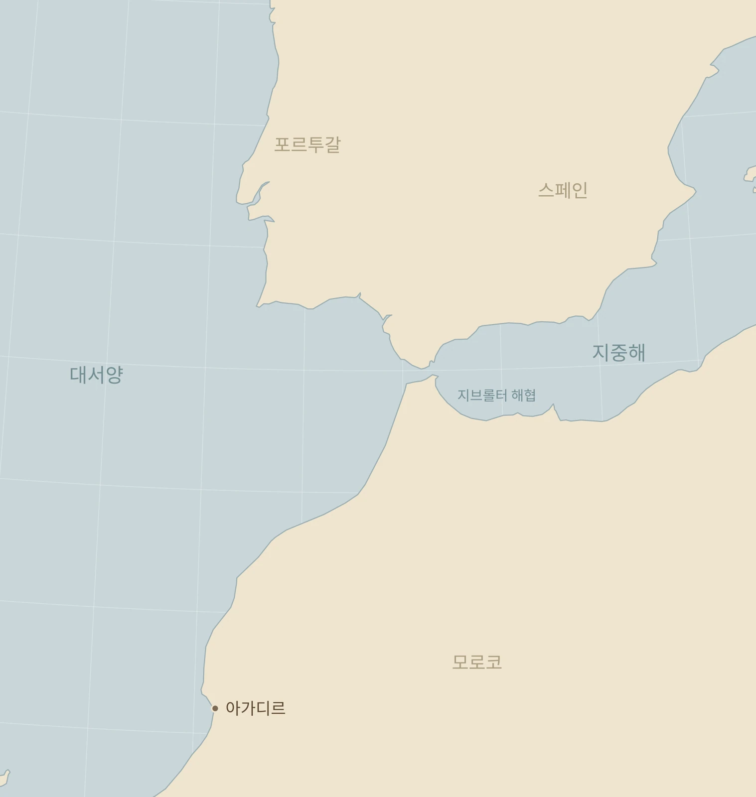

아직 펼치지 않은 카드책으로 지은 궁전 · 4엘에스코리알 왕립 도서관이 도서관의 책들은 책등이 아니라 종이가 펼쳐지는 쪽이 밖을 보도록 꽂혀 있어요. 왜 거꾸로 꽂았을까요?책을 거꾸로 꽂은 도서관이 있대! 왜 그랬을까?
1612년모로코 사피에서 스페인 엘에스코리알까지
엘에스코리알 왕립 도서관
스페인 왕의 도서관 엘에스코리알에는 모로코 술탄의 아랍어 책이 많이 있어요. 1612년 여름, 그 책들은 바다 위에서 길이 바뀌었어요. 지도에서 책 상자가 지나간 길을 따라가 보세요.
모로코 임금님의 책이 배를 타고 바다를 건넜대. 지도에서 따라가 볼까?
검수 전 시안이에요(기준서 2판). 장면에는 엘에스코리알 왕립 도서관 연구자의 논문(세풀크레 삼페르, 2023)과 스페인·모로코 신문 기사에 있는 것만 옮겼어요. 지도는 이 안내서가 그렸어요. 상상은 ‘눈 감고 상상해 보기’에만 썼어요.
시안 확인용카드 단계 미리 보기
1
스페인 왕의 도서관, 술탄의 책
엘에스코리알 왕립 도서관에는 아랍어 손글씨 책이 1,900권쯤 있어요. 그 가운데 열에 일곱이 넘는 책이 모로코 사디 왕조의 술탄 물라이 자이단(Mulay Zaydan)의 책이었어요.
이 책들은 1614년부터 이곳에 있어요. 모로코 술탄의 책이 어떻게 스페인 왕의 도서관에 오게 되었을까요?

책 가운데에는 꾸란 사본과 하디스(예언자 무함마드의 말과 행동을 모은 기록), 철학과 과학의 책들이 있었어요.
스페인 임금님 도서관에 모로코 임금님 책이 많이 있대.
물어보기다른 나라 임금님의 책이 왜 여기 있을까?
2
책 상자가 지나간 길
1612년, 모로코는 내전 중이었어요. 5월 20일 무렵, 아부 마할리(Abu Mahalli)와 싸운 끝에 술탄 자이단은 마라케시를 떠났어요.
술탄은 4천 권이 넘는 책을 상자와 꾸러미에 싸서 함께 가져갔어요.
‘다음 곳으로’를 눌러, 술탄의 책 상자가 지나간 길을 따라가 보세요.

마라케시사피마모라 앞바다카디스엘에스코리알1612년 술탄의 책 상자가 지나간 길 · 나라 이름은 오늘의 이름이에요. 붉은 선은 곳과 곳을 곧게 이었고, 배는 바닷가를 따라 다녔어요. · 이 안내서가 그린 지도 · Natural Earth(퍼블릭 도메인)의 땅과 바다 모양과 세풀크레 삼페르(2023)의 날짜·곳을 바탕으로
사피 항구에서 실은 책 상자들이 엘에스코리알에 닿았어요.
스페인 배들을 이끈 사람은 메디나시도니아 공작 밑의 후안 데 라라 모란(Juan de Lara Morán)이었어요. 그는 7월 6일 바다 위에서 짐 44가지쯤을 처음 적었어요.
임금님 책이 배를 타고 바다를 건넜대. 지도에서 따라가 볼까?
물어보기책 상자를 실은 배가 다른 데로 가 버리면, 임금님 마음은 어땠을까?
3
모든 보물은 책
카디스에서는 7월 31일부터 8월 3일까지 짐을 다시 적었어요. 120꾸러미 가운데 73꾸러미가 책이었어요.
짐을 넘겨받은 루이스 파하르도(Luis Fajardo)는 책이 짐 가운데 가장 값진 것이라고 보았어요. 그해 10월 28일, 그는 국무 회의의 새 비서관 후안 데 시리사에게 이렇게 썼어요.
“그 노획물의 보물은 모두 폐하께 있습니다. 바로 책들입니다.”
루이스 파하르도가 후안 데 시리사에게 보낸 편지(1612년 10월 28일) · 세풀크레 삼페르(2023)에서 · 이 안내서가 옮김
‘노획물’은 바다에서 붙잡아 빼앗은 짐을 말해요. 책은 1612년 9월과 10월 사이 마드리드에 닿았어요. 통역관 프란시스코 데 구르멘디가 세어 보니 4천 권쯤이었어요. 왕 펠리페 3세는 책을 엘에스코리알 도서관으로 옮기게 했어요.
술탄 자이단은 책을 되찾으려 여러 번 애썼지만, 끝내 돌려받지 못했어요.
스페인 사람들은 배의 짐 가운데 책이 제일 귀하다고 생각했대.
물어보기배에 실린 많은 짐 가운데 왜 책이 가장 귀했을까?
4
불, 그리고 사진
1671년 6월 7일, 엘에스코리알에 큰불이 났어요. 그 불을 적은 후안 데 톨레도 수사의 기록에는 “대부분이, 그것도 가장 좋은 것이 탔다”는 말이 있어요(이 안내서가 옮김).
술탄의 책 4천 권쯤 가운데 2,600권쯤을 이때 잃은 것으로 보여요.
모로코의 사절들은 1690년과 1766년에 스페인에 와서 이 책들을 보여 달라고 했어요.
2005년부터 이 도서관의 아랍어 책 1,939권을 하나하나 사진으로 찍었어요. 2013년 7월, 엘에스코리알 도서관은 그 사진 32만 7,661장을 모로코 왕립 도서관에 선물했어요. 술탄 자이단의 꾸란을 그대로 본떠 만든 책도 함께 갔어요.
1612년 여름 사피 항구에서 배에 실은 책들은, 지금도 엘에스코리알에 있어요.
도서관에 큰불이 났었대. 지금은 책 사진을 모로코에도 보냈대.
물어보기소중한 책을 사진으로 찍어 나누면, 무엇이 좋을까?
눈 감고 상상해 보기
1612년 5월 말, 바닷가 항구 사피예요. 바닷바람에 소금기가 섞여 있어요. 사람들이 상자와 꾸러미를 하나씩 배에 올려요. 비단과 가죽으로 감싼 책들이 삐걱이는 갑판 아래로 내려가요. 멀리 다른 배 한 척이 닻을 올릴 준비를 해요.
눈을 감아 봐. 바닷가 항구야. 짠 바닷바람이 불어. 사람들이 책 상자를 하나씩 배에 실어. 출렁, 출렁 배가 흔들려!
나의 자리
1612년 여름, 술탄은 배 두 척 가운데 한 척에 자신이 타고, 다른 한 척에 책을 실었어요. 내가 가장 아끼는 것과 떨어져 있어야 했던 적이 있나요?
아끼는 물건과 떨어져 있어야 한다면, 무엇을 꼭 곁에 두고 싶어?
마음에 닿는 한 줄을 고르거나 직접 써 보세요. 한 줄을 남기면 이 자리의 도장이 찍혀요. 이 기기에만 저장돼요.
더 깊이
궁금한 칸만 펼쳐 읽어도 괜찮아요.
알고 보면
바다 위의 첫 목록 후안 데 라라 모란이 7월 6일에 적은 목록에는 궤짝 22개, 꾸러미 15개, 글 쓰는 상자 3개, 상자 3개, 바구니 1개가 있어요. 카디스의 목록에서는 8월 1일에 손글씨 책 255권이 처음 적혔어요.
책의 겉모습 목록에는 제목이 거의 없고, 비단·다마스크·벨벳·가죽 표지, 금박을 입힌 표지 같은 겉모습이 적혀 있어요.
묶이지 않은 책 구르멘디는 4천 권쯤 가운데 500권 넘게가 묶이지 않은 채였다고 적었어요.
더 큰 불 1671년의 불로 이 도서관은 5천 권이 넘는 손글씨 책을 잃었다고 전해요. 사디 왕조 책의 목록도 그때 탔어요.
기록마다 다른 점
언제 떠났나 세풀크레 삼페르(2023)는 배가 6월 23일 저녁 아가디르를 떠났다고 하고, El Debate의 글(2026)은 6월 22일 밤이라고 해요.
뱃삯 El Debate는 술탄이 뱃삯 3,000두카도를 미뤘다고 쓰고, 세풀크레 삼페르는 짐을 받고 뱃삯을 치를 사람이 오지 않았다고 써요.
어디로 데려갔나 두 자료는 붙잡은 배가 카디스로 갔다고 해요(세풀크레 삼페르는 7월 29일쯤, El Debate는 7월 31일). 미국 프린스턴 고등연구소의 강의 자료(슈미트케)는 리스본으로 데려갔다고 적어요.
얼마나 탔나 세풀크레 삼페르는 4천 권쯤 가운데 2,600권쯤을 잃었다고 보고, 슈미트케는 절반쯤이 탔다고 적어요.
직접 가 보기
확인한 날 · 2026년 11월 18일 · 바뀌기 쉬운 정보라 정기적으로 다시 확인해요
엘에스코리알 수도원은 마드리드에서 기차나 버스로 갈 수 있어요. 관람 시간과 요금, 도서관 홀을 볼 수 있는지는 스페인 왕실재산관리청(Patrimonio Nacional) 누리집에서 확인하세요.
책 상자가 지나간 길 금박
지도에서 마지막 곳까지 따라가면 카드에 금박이 입혀져요.
마라케시에서 엘에스코리알까지 길 따라가기
아이와 함께 채색
아이와 함께 끝까지 보면 카드가 채색돼요.
아이와 함께 ‘영화처럼 보기’를 끝까지 보기
근거 보기 (5)
- Jaime Sepulcre Samper, 「“Todo el tesoro de la presa lo tiene Su Majestad, que son los libros”. Los primeros inventarios del fondo saadí de El Escorial (1612)」, Escurialensia 1(2023) — 5월 20일 무렵 마라케시를 떠남, 4천 권 넘는 책을 궤짝·꾸러미에, 5월 25~26일 사피, 네덜란드 배와 프랑스 배 노트르담 드 라 가르드, 6월 14일 남쪽으로·48시간 뒤 아가디르, 짐을 받고 뱃삯을 치를 사람을 기다림, 6월 23일 저녁 마르세유로, 7월 5일 세부강 어귀(마모라·메디아)에서 후안 데 라라 모란(메디나시도니아 공작 밑)이 붙잡음, 7월 6일 목록 44가지, 7월 29일쯤 카디스, 7월 31일~8월 3일 파하르도의 목록 120꾸러미·책 73꾸러미, 8월 1일 255권, 10월 28일 파하르도가 시리사에게 보낸 편지, 9~10월 마드리드, 구르멘디 4천 권·500권 넘게 묶이지 않음, 1614년부터 엘에스코리알, 되찾으려는 애씀이 끝내 실패, 1671년 후안 데 톨레도 수사의 기록·2,600권쯤 잃음, 지금 아랍어 책 1,900권쯤·70% 넘게 사디 왕조, 표지의 모습
- Fernando Prado, 「Cómo la biblioteca de un sultán de Marruecos acabó en El Escorial」, El Debate(2026년 7월 8일) — 아부 마할리가 마라케시를 차지함, 노트르담 드 라 가르드, 3,000두카도·6월 22일 밤, 7월 31일 카디스 만, 펠리페 3세가 엘에스코리알로 옮기게 함, 73꾸러미와 구르멘디, 1671년 6월 7일 불·5천 권 넘게·사디 왕조 목록도 탐, 1690년·1766년 사절, 2005년부터 1,939권 사진, 꾸란·하디스·철학과 과학의 책
- Le Matin(2013년 7월 15일) — 엘에스코리알 도서관이 아랍어 책 1,939권 전체의 사진 32만 7,661장을 모로코 왕립 도서관에 줌(후안 카를로스 1세의 모로코 방문 때), 물라이 자이단의 꾸란 본뜬 책
- Sabine Schmidtke, 「Reconstructing Libraries of the Medieval and Early Modern Period」(프린스턴 고등연구소 강의 자료) — 4천 권쯤, 마르세유로 가던 카스텔란의 배, 1612년 7월 스페인 함대가 붙잡아 리스본으로, 1614년 엘에스코리알, 1671년 불로 절반쯤 탐
- Natural Earth 1:50m 땅·호수 자료(퍼블릭 도메인) — 이 안내서가 그린 지도의 바탕
그림·사진·소리 출처
‘처음 만나는 기독교 문화’의 깊은 카드예요. 실제 인물의 사진은 쓰지 않았어요. 카드 단계와 남긴 글은 이 기기에만 저장돼요.